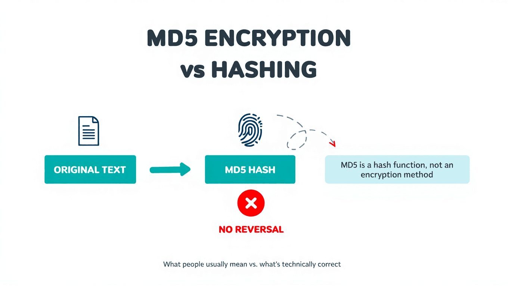

Learn why people often say MD5 encryption, why that wording is technically wrong, and what hashing actually means in practice.
Many people search for MD5 encryption, but the phrase is not technically correct. MD5 does not encrypt data. It hashes data. That difference matters because it changes what users should expect from a tool, a tutorial, or a piece of code. If a page promises to encrypt a password with MD5 and later decrypt it, the wording is misleading from the start.
Encryption is reversible when you have the correct key. A common example is storing a private note or sending a secure message. The readable text is turned into ciphertext, then later turned back into the original text. Hashing works differently. A hash function takes an input and creates a digest. The digest is used for comparison, not recovery. There is no key that opens an MD5 hash and returns the original text.
The original MD5 document, RFC 1321, calls MD5 a message-digest algorithm. That name is helpful because it points to the real purpose: creating a compact fingerprint of a message. The output is fixed in size, even if the input is long. A whole file and a short phrase both produce a 128-bit MD5 digest.
This is why an online MD5 generator can feel like an encryption tool even when it is not one. You type normal text, click a button, and receive a string that looks unreadable. The output looks hidden, but it is not encrypted. It is a deterministic digest. Anyone who hashes the same input with the same algorithm will get the same output.
The practical risk comes when developers use the wrong mental model. If they think MD5 is encryption, they may use it to store passwords and assume the result is safe. It is not. Fast general-purpose hashes make password guessing cheaper for attackers. OWASP explains in its Password Storage Cheat Sheet that passwords should use modern adaptive password hashing algorithms rather than simple fast hashes.
A useful way to remember the difference is this: encryption protects information that must be read again later, while hashing verifies or compares information without needing to read the original value. You encrypt a document when you need to decrypt it. You hash a download when you only need to check whether your file matches the publisher's file.
There are edge cases where hashes are used as part of larger cryptographic systems, but that does not make MD5 encryption. It also does not make MD5 safe for new security designs. MD5 has known weaknesses, and modern systems usually prefer SHA-256, SHA-3, bcrypt, scrypt, Argon2id, or other tools depending on the exact job.
For site owners and writers, this difference should shape the wording of every article and tool label. A page can still answer the search intent behind MD5 encryption, but the body copy should correct the term early. That builds trust with beginners and avoids teaching a bad habit. Use phrases such as generate an MD5 hash, calculate a digest, or compare a checksum. Reserve encryption for reversible protection with keys.
For this site, the wording will be honest. We may mention MD5 encryption because people use that search term, but the content will explain that the correct term is MD5 hashing. That helps beginners find the answer they need without carrying forward a mistake that can lead to poor security decisions. If you need the basic background first, start with What Is MD5 Hashing and Why Is It Still Used?.